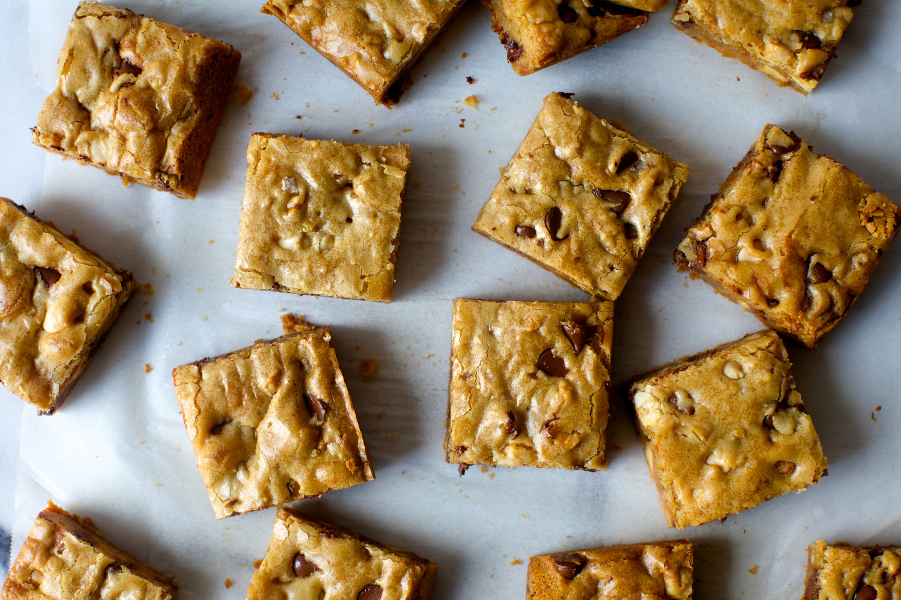

blondies, infinitely adaptable
[This recipe got new photos in 2018, plus some expanded notes /Q&A at the end.]
I’m back! But not really, as I got home an hour ago, whipped up a batch of the only blondie recipe you’ll ever need for our favorite blonde’s umpteenth 25th birthday and now I have about 45 minutes to find something in my closet that camouflages my sling because ugh, it’s such an eyesore. (On the flipside, when I don’t wear it and someone bumps into me I get all outraged like ‘don’t you know my shoulder is injured?!’ Well, no Deb, they don’t.)
Although I am certain the last thing anyone wants to think about today is eating, baking, desserts or the next big cooking holiday, this recipe will usher in what I hope will be a month peppered with ideas for gifty kitchen confections. I know a lot of people this time of year make small gifts bags of baked goods, or larger tins for parties, and while I typically don’t, this gives me a chance, too, to try out a lot of bookmarked recipes while also never showing up at a party empty-handed. Also, I finally have an excuse to buy a candy thermometer.
Of course, this recipe is nothing new. I’ve been making it for nearly two years now because it’s simple the tastiest and easiest — one bowl! — baked goods to whip up for a party. It’s denser than chocolate chip cookies, more complex than brownies and in the classic Minimalist style, you’ve can customize it anywhere from a cranberry almond coconut bar to the gunky atery-cloggers I’m best known for. I typically load up on whatever chocolate I have around — tonight it was milk, white and bittersweet — finely chop some walnuts or pecans, use dark brown sugar, European butter and in something you will probably sense is a theme with me, add a splash of bourbon to boot. Gild the lily? Oh, not me. Never.
Finally, I double the recipe, baking it in a 9×13 pan (though really, just because I don’t have an 8×8 — yet) and cut the pieces really small, almost like cubes so we can rest assured that we’re not overdoing it. Oh no, not us. Never.
SERVINGS: 16 OR MORE TIME: 40 MINUTES SOURCE: ADAPTED FROM HOW TO COOK EVERYTHING
2018 Update: Before I had mastered the art of the salted brown butter crispy treat and my 40-minute naptime brownies, this was my go-to, back-pocket, too-easy-to-skip dessert. For years, before every party, I’d mix up a pan of these basically from memory because that’s how easy they are: 1 (stick of butter) + 1 (cup of sugar) + 1 (egg) + 1 (cup of flour) + 1 1/2 (cups of mix-ins, for me usually chocolate chips and nuts but your mileage may vary, maybe you like dried fruit or crumbled heath bars or candy canes here, I mean, who wouldn’t? but more suggestions are at the end), then 20 minutes in the oven for extra-gooey, 25 for set but still buttery, and look, you did it, and all in one bowl in under 45 minutes. I began making them with brown butter in 2014 and have never looked back. Not all baked goods with brown butter have a toasty butter flavor you can taste in the end; these absolutely do.
8 tablespoons (1 stick, 4 ounces or 115 grams) unsalted butter
1 cup (190 grams) light or dark brown sugar
1 large egg
1 teaspoon vanilla extract
1/2 teaspoon flaky sea salt, or 1/4 teaspoon coarse sea salt
1 cup (130 grams) all-purpose flour
1 1/2 cups mix-ins of you choice (my favorite: 1 cup chocolate chips plus 1/2 cup chopped toasted walnuts, see below for more suggestions)
Heat oven to 350°F. Butter an 8×8-inch baking pan, or line the bottom and two sides of one with parchment paper, buttering the exposed parts.
Melt butter in a small saucepan; I like to keep cooking it, stirring occasionally, until it becomes toasty and browned at the bottom and has an unbelievable aroma. It’s definitely worth the trouble here. Pour into a medium or large bowl and whisk in sugar until smooth. At this point, it should be cooled to lukewarm, but if it’s not, let it rest for a few minutes until it is, then whisk in egg, vanilla, and sea salt. Stir in flour and additions of your choice.
Scrape into prepared pan and smooth with spatula; the batter is thick and will take some nudging. Bake for 20 to 25 minutes, until lightly browned at edges but looks a tiny bit underbaked. (I always err on the side of caution with baking times — nobody ever complained about a gooey-middled cookie.) Let blondies cool in pan, or just let them cool in it for 10 minutes and use the parchment sling to slide them onto a cutting board. Cut into 16 or more squares.
Leftover (ha!) blondies can be stored in an airtight container at room temperature for up to a week.
Ideas for additions: Chopped nuts, toasting them first for better flavor; 2 tablespoons espresso powder; 1/2 teaspoon mint or almond extract in place of the vanilla; 1/2 cup dried fruit; 1/4 cup bourbon, scotch or other whiskey (increase the flour by 1 tablespoon); a mix of chopped chocolate or candy bars (toffee bits would be fantastic here); peanut butter chips instead of chocolate chips.
Expanded notes, 2018: Here are some of the FAQ questions about these over the years: “Mine look smaller, why do yours look thick?” These are, in fact, a thin blondie, similar in thickness to the brownie recipes on this site. However the original images were a little confusing because for parties, I’d always cut them into little 1-inch squares as I believe that all foods eaten standing up, especially at parties, shouldn’t be more than a single bite, at a time or becomes complicated to hold your drink too, or worse, you get crumbs in it, which would be unacceptable. Rules are rules.
“Mine were so flat, why don’t you put baking powder or baking soda in them?” Blondies are also known as ‘butterscotch brownies,’ and brownies, I firmly believe, have no place for baking powder or baking soda in them. That would make them cake. I have no interest in either being cakey. I prefer them chewy, with just a little puff and crackle that comes from baking with an egg. If you must add baking powder, I won’t judge; the common measurement for a blondie recipe of this volume is 3/4 teaspoon. Stir it in with the flour.
“Mine took longer to bake.” My bad. I call these “infinitely adaptable” because they are, but failed to mention that wet ingredients (bananas, bourbon) will probably add baking time. Bananas are probably the riskiest of this, and I’m now nixing them as a suggestion, although I don’t think any harm would come from a couple tablespoons of mashed banana, if you so desire.
“Mine came out hard.” Don’t overbake these, just don’t. Like a good chocolate chip or oatmeal cookie, the way to have a slight gooey texture in the center when you’re done is to take them out before they look fully done. By the time they look fully done, they’ll cool off and seem a little crunchy.
“Can I double these?” Absolutely, in a 9×13-inch pan. They’ll end up a tiny bit thicker.
Comments